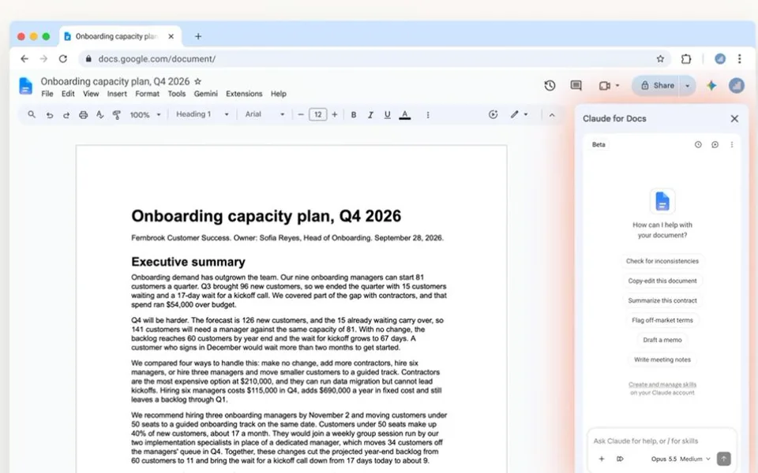

ARTICLE 01
Claude, 구글 문서·스프레드시트·슬라이드 사이드바 연동 출시
구글 워크스페이스에 Claude 사이드바 합류.

SUMMARY
- Anthropic이 'Claude for Google Workspace' 애드온을 공개 베타로 내놨어요. 문서, 스프레드시트, 슬라이드 옆에 사이드바가 열려 작업을 도와줘요.
- 문서에서는 맞춤법 수정과 재작성을, 시트에서는 수식과 표 작성을, 슬라이드에서는 기존 레이아웃으로 새 슬라이드 제작을 도와줘요. '편집 전 확인' 모드로 변경을 미리 볼 수 있어요.
- 모든 유료 Claude 사용자가 워크스페이스 마켓플레이스에서 쓸 수 있어요. 파일 링크를 붙여넣어 Claude 안에서 편집하는 커넥터도 새로 나왔어요.}
LINK